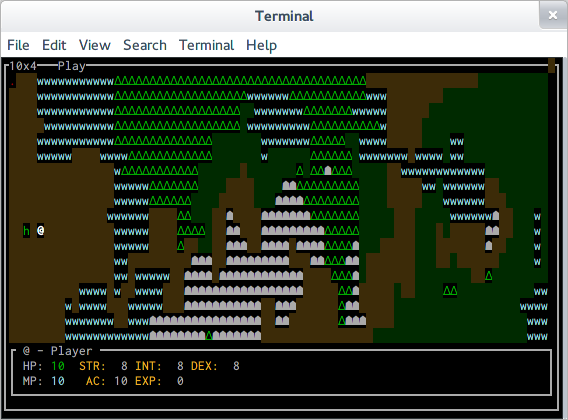

RCAC Kickoff Hackathon
The kickoff hackathon for the Rochester Civic App Challenge happened this past weekend. As it was the first FOSS@RIT hackathon of the year, I was thrilled to see that we had a pretty substantial turn out for the event-- especially considering we weren't allowed to announce it until just a couple days beforehand.
Since this was the lead-in for the Civic App Challenge, most of the people who turned up worked on open government and municipal data projects. A few of these projects were pretty well established, like Tim Duffy's MonroeMinutes (and the awesome BarkingOwl system that powers it), but for the most part we saw a lot of new faces working on some interesting new projects. There's a surprising amount of machine readable data published by entities in New York state and in Monroe County in particular, and it's always cool to see what people manage to do with it.
I spent most of the early hours of the event getting people situated and setting up the projector walls with our IRC, twitter feeds, and even live coding feeds powered by tmate.io mirrors of a few attendees' tmux sessions. After that, I spent some time poking around with some front-end work for a voting education site, but I lost interest rather quickly and moved on. I was in the mood for something a bit more technically challenging, and fighting with CSS wasn't cutting it for me.
I ended up digging out an old one-off project of mine, an implementation of Conway's game of life that I thought would be fun to have occupy one of the projector walls that wasn't in use. The drawing was rather primitive thought (just writing out lines to the console and clearing between stages), and it ran pretty poorly over the mirrored tmux session. I resolved to fix it by doing something I'd meant to do quite some time ago-- rewrite it in ncurses. I knocked that out pretty quickly and was feeling reasonably pleased with myself when it occurred to me I had another old project that could use some ncurses-based lovin'.
In 2011, I participated in a 24-hour game jam hosted on CSH by a few friends of mine who were majoring in game design. I entered a project called Anachronos, which was an overly-complicated turn-based strategy "game" that was really more of a sandbox for me to experiment with procedural terrain generation and some weird time-travel mechanics where the results of previous turns could be changed. It was never really finished, but I'd struggled to find the time to keep hacking on it after the game jam other than a few half hearted attempts to refactor out a lot of the time-limit-induced ugliness. One of the main things I had wanted to do with it was rewrite it with an ncurses interface, so with the Python curses bindings fresh in my mind from rewriting the game of life just before hand, I set to work salvaging interesting bits of Anachronos.
By morning, and at least a few hours trying to figure out what on earth my old terrain generation routine was supposed to be doing, I'd managed to write the basics of an engine that I think might be useful to me not just for using to rewrite Anachronos, but also for a rogue-like project I'll probably end up doing for one of the sprints in Remy's Advanced Projects in FOSS class. If you were wondering, it looks something like this:

Of course, the source for it is up on Github. I'm still figuring out what features I'd like to have in the engine itself and what to leave out for the games I build on top of it; I'll have to ask one of the game design majors that seem to make up the majority of the FOSS class for advice. After that, I need to abstract it out a bit more to make it useful as a library rather than the tech demo that it essentially is now. Oh well, can't get everything done in one night.